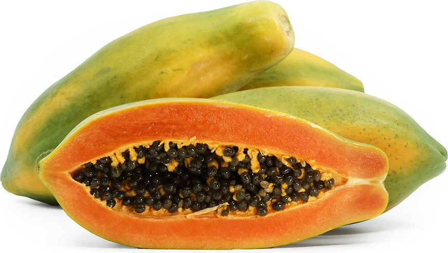
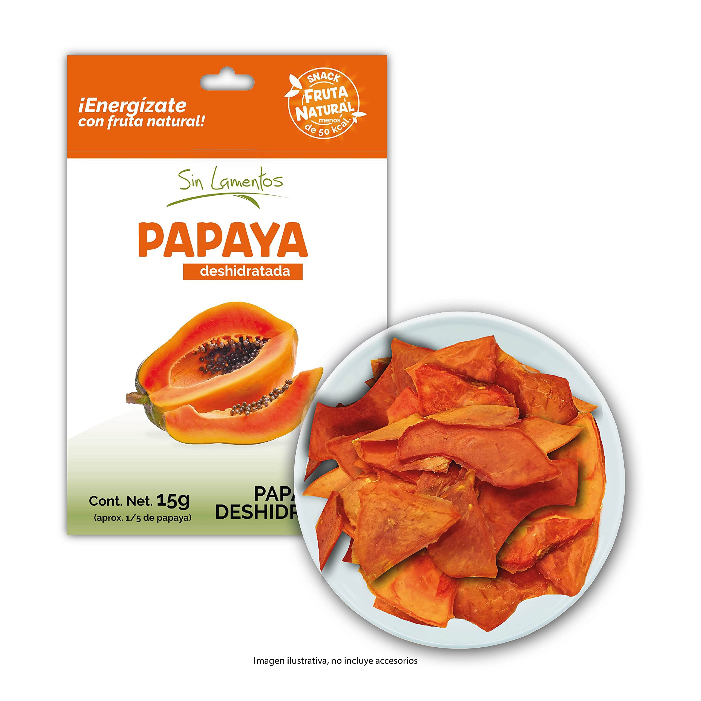

Origen y cultivo
Originaria de América tropical, actualmente se cultiva en diversas zonas cálidas. La planta tiene un tallo principal y hojas grandes agrupadas hacia la parte superior; sus frutos crecen cerca del tallo.
PRESENTACIÓN UNIVERSITARIA
Integrantes de la Universidad Tecnológica de Panamá
Proyecto estudiantil · Papaya (Carica papaya)
La papaya (Carica papaya) es una fruta tropical de pulpa aromática que se consume en distintas etapas de maduración. En esta presentación se describen sus características botánicas y alimentarias, así como algunos de sus usos.
El proyecto estudia la papaya como materia prima para una propuesta de snack deshidratado. Las condiciones de elaboración y sus resultados aún deben establecerse mediante pruebas.
.jpg)
01 · Información general
La papaya es el fruto de una planta tropical de la especie Carica papaya, perteneciente a la familia Caricaceae. Se cultiva principalmente en regiones cálidas y es apreciada por su pulpa suave, su aroma característico y la variedad de formas en que puede consumirse.
El fruto suele presentar una cavidad central con numerosas semillas oscuras rodeadas de pulpa. Según la variedad y su desarrollo, la pulpa puede ser amarilla, anaranjada o rojiza; el tamaño, la forma y el grosor también pueden variar.
La papaya se consume fresca y se utiliza en bebidas, ensaladas y postres. También puede servir como materia prima para productos transformados. En este proyecto, su uso potencial en un snack deshidratado es el punto de partida para estudiar y documentar sus propiedades.
Originaria de América tropical, actualmente se cultiva en diversas zonas cálidas. La planta tiene un tallo principal y hojas grandes agrupadas hacia la parte superior; sus frutos crecen cerca del tallo.
Durante la maduración, la cáscara cambia de verde hacia tonos amarillos y la pulpa se vuelve más blanda y dulce. El momento de cosecha influye en la textura y en el sabor.
La pulpa contiene principalmente agua y aporta fibra, vitamina C y carotenoides. La cantidad de nutrientes puede variar de acuerdo con la variedad y la madurez del fruto.
La fruta madura puede consumirse sola o incorporarse a bebidas, ensaladas y postres. La papaya menos madura también se emplea en preparaciones saladas.
La pulpa se puede utilizar en productos procesados. La deshidratación reduce su contenido de agua y modifica el peso y la textura; los resultados dependen del método empleado.
Se propone estudiar la papaya como base de un snack deshidratado tipo lámina o chip. Las pruebas, los parámetros y la evaluación del producto están pendientes.
Variedades de referencia
El tamaño, la forma, el color de la pulpa y el sabor pueden variar. Estos nombres son ejemplos para identificar variedades durante el proyecto; la disponibilidad depende de la región y del proveedor.

.jpg)
.jpg)
Imágenes de referencia
Referencias visuales para presentar la propuesta de snack de papaya deshidratada y algunos equipos relacionados. Las imágenes no confirman el diseño final del producto ni el equipo que se utilizará.


.jpg)
¿Qué es una base de datos?
Una base de datos permite almacenar información relacionada y consultarla de manera organizada. En este proyecto puede ayudar a documentar la fruta utilizada, su variedad, la preparación de cada muestra, el equipo, las condiciones del ensayo y las mediciones de peso.
La segunda página incluye una herramienta de demostración que permite editar tablas y guardar cambios en el navegador. Los datos se almacenan localmente en este dispositivo; no se envían a un servidor ni se comparten entre usuarios.
02 · Participantes
03 · Organización de la información
Herramienta local para organizar variedades, preparaciones, muestras, equipos, experimentos y mediciones. Los cambios se guardan en este navegador.